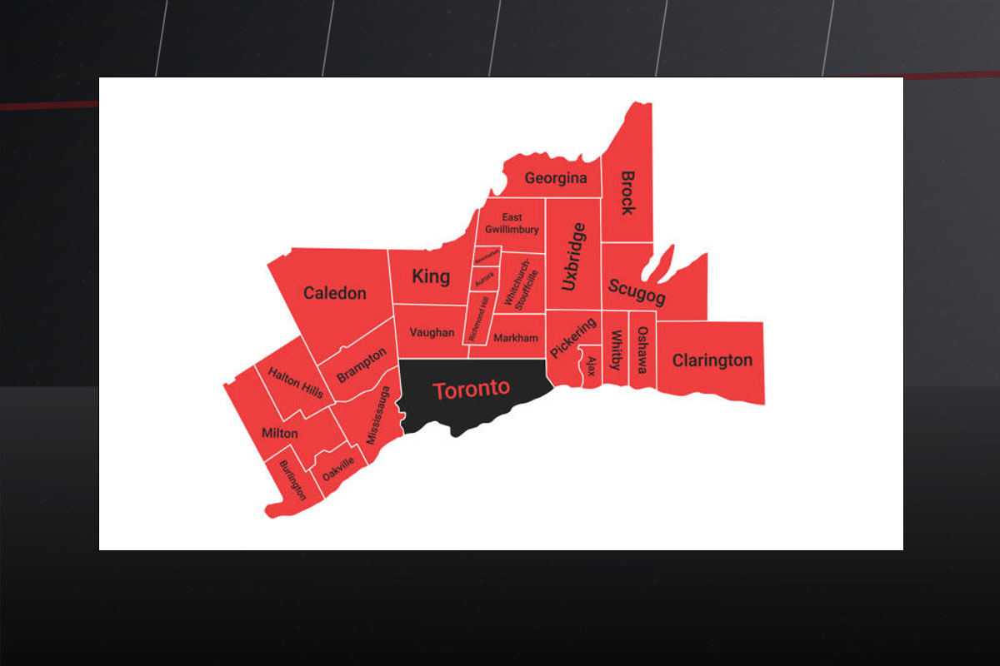
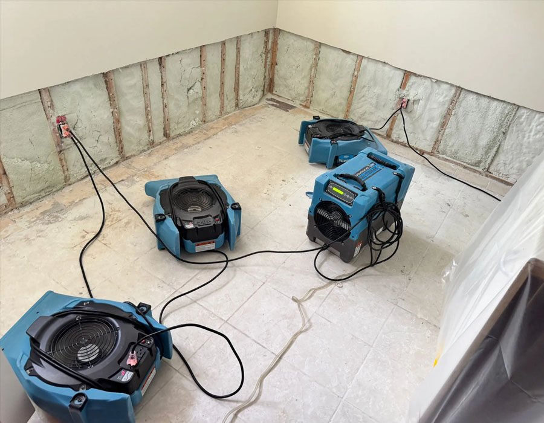
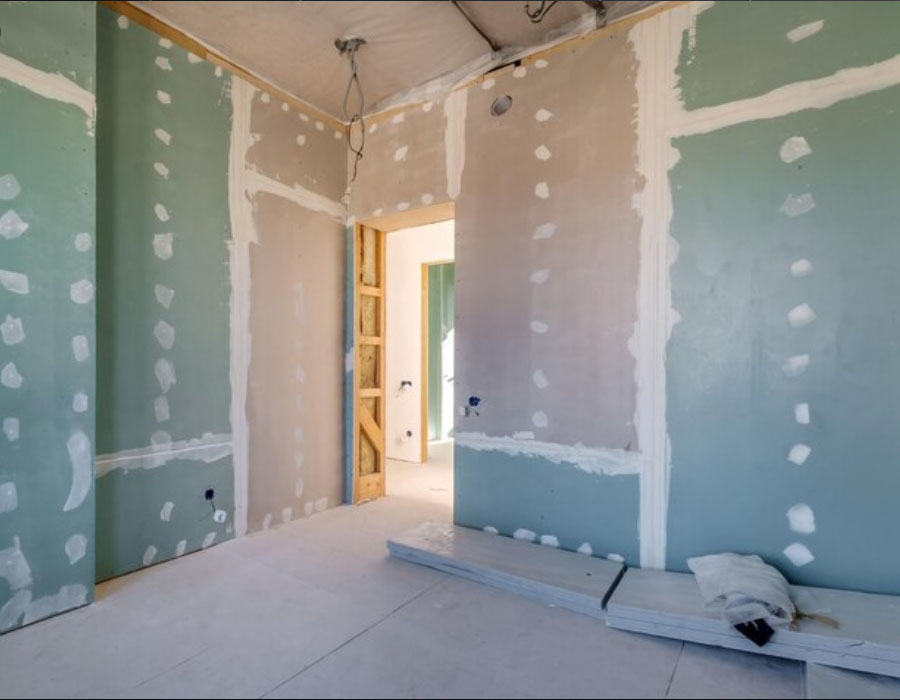
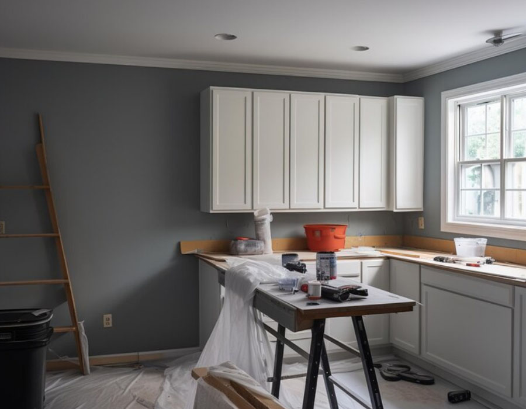

Water Damage Restoration
Fast response for leaks, burst pipes, flooding, wet drywall, flooring damage and structural drying.
Learn MoreRapid property restoration support
Royal Pro Services helps homeowners, property managers and businesses respond quickly to water damage, flooding, mold issues, fire damage, smoke damage, demolition and property restoration needs.
Core services
Focused support for urgent cleanup, damaged-material removal, drying, repair planning and restoration coordination across the GTA.
Fast response for leaks, burst pipes, flooding, wet drywall, flooring damage and structural drying.
Learn More
Cleanup support for basement flooding, standing water, moisture control and drying equipment setup.
Learn More
Assessment and remediation support for visible mold, moisture-related mold and affected building materials.
Learn More
Cleanup and restoration support after fire, smoke, soot and odour damage.
Learn More
Controlled removal of damaged drywall, flooring, ceilings and affected materials during restoration projects.
Learn More
Repair and rebuild support after water, fire, mold or demolition work is completed.
Learn MoreHow we help
Reach out by phone or form with the service type and location.
The property conditions and affected areas are reviewed.
Moisture, visible damage and potential safety concerns are considered.
Damaged materials, water and affected areas are handled as needed.
You stay informed about the work area, findings and next steps.
Repair needs are organized after cleanup and mitigation work.
Water and flood response
Water damage can spread quickly through flooring, drywall, insulation and structural materials. Royal Pro Services helps identify affected areas, remove damaged materials where needed, support drying, and prepare the property for repair.

Mold support
Mold problems often start with moisture. We help property owners identify affected areas, contain work zones where needed, remove impacted materials, and support a cleaner restoration process.
Fire recovery
After a fire, smoke and soot can affect walls, ceilings, contents and air quality. Royal Pro Services supports cleanup, damaged material removal, odour control and restoration planning.
Property types
Service area

24 hour emergency water damage help
Fast support for flooding, burst pipes, wet drywall, basement water and emergency cleanup across Toronto, the GTA and nearby service areas.
Why choose us
Urgent situations are handled with clear next steps and practical action.
You know what is happening, what is affected and what comes next.
Work zones are approached with care for the property and occupants.
Service for homes, condos, offices, retail spaces and managed properties.
Cleanup, removal and rebuild support can be planned together.
Built around the needs of Toronto, the GTA and surrounding communities.



FAQ
Call Royal Pro Services or send a request and we will contact you as soon as possible.